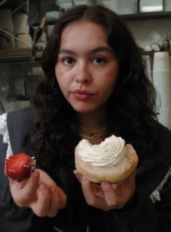
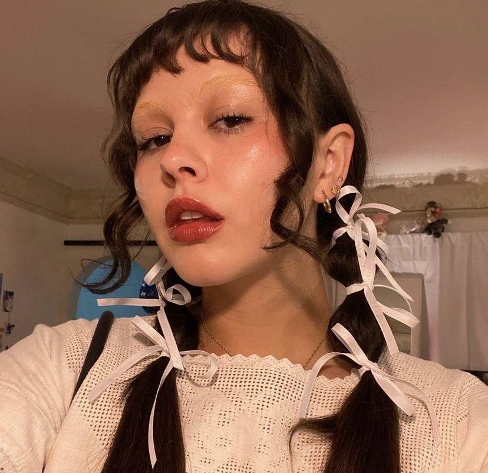
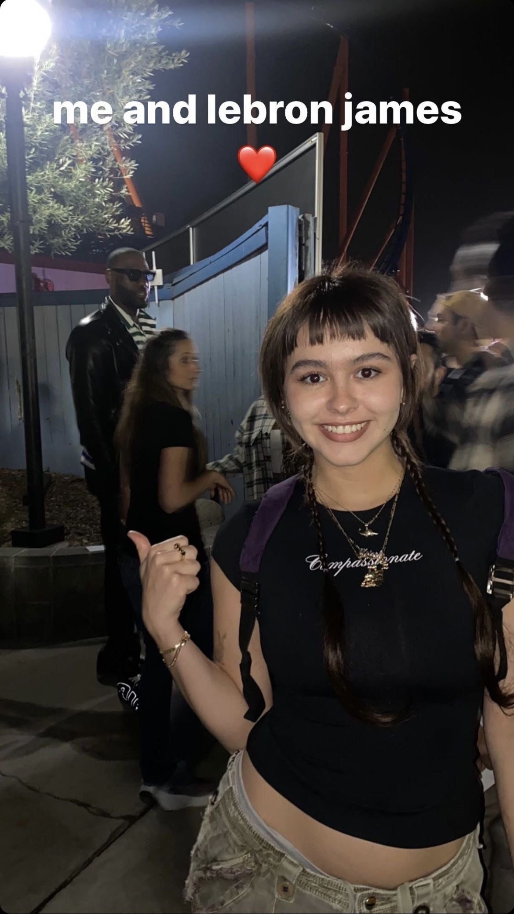
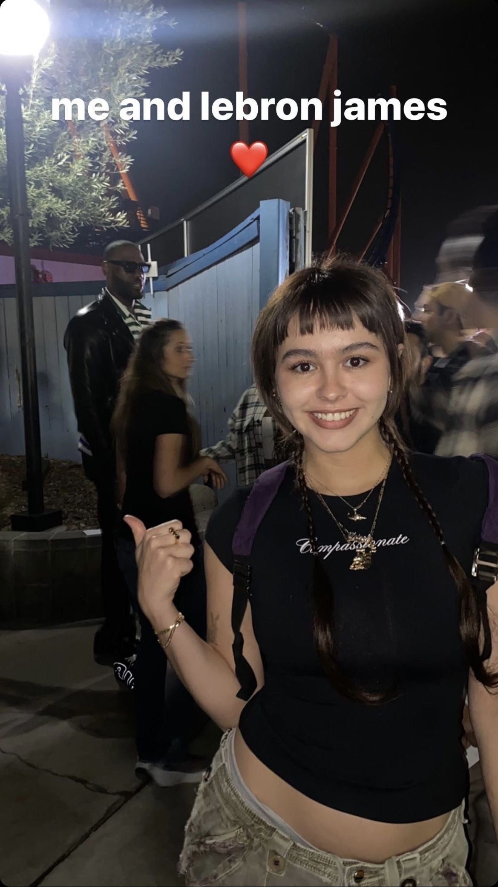

Who Is Enya Umanzor???
Enya Umazor born in Miami, Florida A popular social media influencer mainly on YouTube. Her fame originated from comedy content Vine, but now stretches across make-up, comedy, vlogging, and acting. Enya dives into her past present and future experiences with her viewers and gives a realistic grasp of what it's like in the social media world as cohost of Emergency Intercom.


